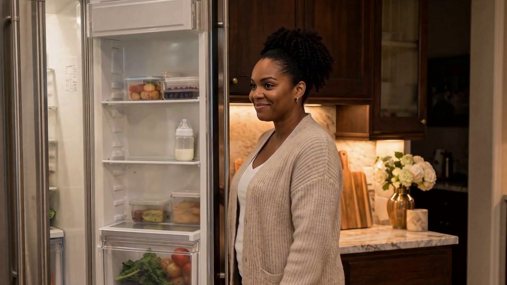

Pause and practice
Before the parent goes to bed, what would you say back?
Pause here to think or say your response out loud.
There’s a bottle in the fridge if you need it.
When the baby is ready to feed, would you like me
to bring them to you to nurse first?
When would you like me to use the bottle?